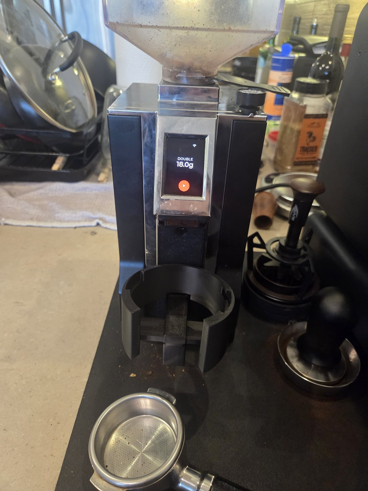

Overview
This is a build of jaapp's Smart Grind-by-Weight, which swaps the Eureka's stock display and timer for an ESP32-S3 touchscreen and a load cell under the portafilter. Instead of grinding for a fixed time and weighing afterwards, the grinder weighs as it grinds and stops at the target dose, using a predictive stop that learns the grinder's flow rate and motor lag, then pulses to top up the last fraction of a gram. I followed the upstream build documentation closely, including its recommended wire lengths; the write-up there is excellent, so this page only covers what I changed.
Hardware
The parts are the ones the upstream project specifies: a Waveshare ESP32-S3 1.64″ AMOLED touch display that drops into the grinder's original screen opening through a printed adapter, a 1 kg bar load cell read by an HX711 amplifier, and a 1000 µF capacitor on the supply for brownout protection. The controller switches the grinder's motor through its existing control connector. The load cell and HX711 mount on a printed back plate that clips to the grinder, with the portafilter holder bolted to the free end of the load cell.


Display, HX711, load cell and brownout capacitor wired up on the bench before going into the grinder.
58 mm portafilter holder
The main change from the upstream build is the portafilter holder. My espresso machine is a Decent, so I modelled a new holder in Fusion shaped around its 58 mm naked portafilter, open at the front for the handle and sitting under the grinder's chute. It mounts on the load cell in place of the stock holder, and the firmware tares out the portafilter's weight before each grind.


The Fusion model: the holder on the load cell, the 58 mm portafilter in place, and a view from below with the load cell between the back plate and the holder. The Fusion file is available here: eureka_grind_by_weight_58mm_holder.f3d.
Firmware
The other change is the firmware. Instead of the upstream build, the grinder runs marvin-rse's fork of the community firmware, which adds support for the updated Waveshare 1.64″ display (the newer SH8601-based V2 board) alongside the original. It's flashed entirely from the browser: the first install goes over USB with the fork's web flasher in Chrome, and later updates go over Bluetooth from the same page, without opening the grinder. The fork also adds screensaver options for the AMOLED panel, which is nice for a screen that's on all day.
In use
Pick a preset (single, double, or a custom dose), drop the portafilter into the holder, and press start. The screen counts up the dose live and the motor stops on its own at the target.
An 18 g double dose ground straight into the 58 mm portafilter.
Links
- Smart Grind-by-Weight by jaapp — the original project, with build docs, printable parts and wiring.
- marvin-rse's web flasher — the firmware fork used here, with USB and Bluetooth flashing from the browser.